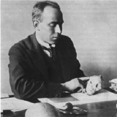

Biographien: Raymond Dart

Raymond Arthur Dart was born in Queensland, Australia, in 1893, the fifth of nine children to parents who lived on a bush farm raising cattle. He won a scholarship to the University of Queensland in Brisbane where he excelled, winning other prizes and scholarships and going on to do medical studies at Sydney. After graduating, he went to England to serve in a medical corps in World War I. As the war ended, he was delighted to be accepted as an assistant by Grafton Elliot Smith, who worked at the University of Manchester and was probably the world's preeminent neuroanatomist (and a fellow Australian who was later knighted). Something in the relationship may not have clicked, because in 1922 Dart was sent off to be professor of anatomy at the newly-founded University of Witwatersrand in Johannesburg, South Africa. Despite Dart's brilliance, he appears to have had a reputation for "flightiness, unorthodoxy and a scorn for accepted opinion". This was hardly a prime opportunity for one of Smith's brightest students. Conditions at the university were appalling, and Dart had to work hard to build the anatomy department from the ground up.Im Jahr 1924 erfuhr Dart von einem Fossilien-Schädel eines Babuins, der in einem nahegelegenen Kalksteinbruch in Taung gefunden worden war, und bat darum, ihm weitere Knochen oder Fossilien zu schicken, die gefunden würden. Die ersten zwei Kisten erreichten im November desselben Jahres, und Dart fand eine Fossilien-Abguss der Innenseite eines Primatenschädels, der in einen anderen Steinblock passte, der möglicherweise ein Gesicht enthielt. Es dauerte Dart etwa einen Monat, genug Stein zu entfernen, um das Gesicht und den Kiefer eines jungen fossilen Primaten freizulegen, der später den Spitznamen Taung Baby erhielt. Dart betrachtete das Fossil als intermediär zwischen Affen und Menschen und verfasste schnell einen Artikel für Nature, der es beschrieb und als Australopithecus africanus (Südlicher Affe aus Afrika) benannte. Nach einem anfänglichen Aufschrei der Anerkennung lehnte die wissenschaftliche Elite in Großbritannien das Taung Baby als Affen ab. Zur Zeit war Piltdown Man weitgehend als menschlicher Vorfahr akzeptiert, und Taung mit seinem affenartigen Schädel und menschlichen Zähnen schien schwer mit dem menschlichen Schädel und dem affenartigen Kiefer von Piltdown in Einklang zu bringen. Virtuell der einzige Unterstützer von Dart war der schottische Arzt und Paläontologe Robert Broom. Dart reiste zwar 1930 nach London, um Unterstützung für sein Taung Baby zu gewinnen, doch seine Entdeckung wurde von dem kürzlich entdeckten Peking Man-Schädel in den Schatten gestellt. Dart gab die Fossilienjagd für viele Jahre auf und konzentrierte sich stattdessen auf seine Arbeit am Anatomiedepartment in Witwatersrand, wo er von 1925 bis 1943 als Dekan diente.
In den späten 1930er und frühen 1940er Jahren fand Broom viele weitere australopithecine Fossilien in Südafrika, und in den späten 1940er Jahren wurde Darts Position bestätigt, als viele Wissenschaftler schließlich akzeptierten, dass Australopithecinen Hominiden waren. Mitte der 1940er Jahre versuchte Dart erneut nach Fossilien zu suchen, am Ort von Makapansgat. Er fand eine Reihe von Fossilien, die er Australopithecus prometheus nannte, unter der falschen Annahme, dass ihr schwarzer Zustand die Nutzung von Feuer anzeigte (in der griechischen Mythologie war Prometheus der Titan, der den Menschen das Feuer gab). Sie werden heute in A. africanus eingeordnet. Dart, der nie vor extravaganten Behauptungen zurückschreckte, schloss zudem aus seiner Analyse des Ortes, dass diese Kreaturen eine Kultur besessen, die er „osteodontokeratisch" (Knochen, Zahn und Horn) nannte, und argumentierte, dass sie wilde Jäger und blutrünstige Mörder waren, deren gewalttätige Tendenzen Spuren im menschlichen Verhalten hinterlassen hatten. Die Idee vom „Killer-Affen" wurde vom Schriftsteller Robert Ardrey in Büchern wie African Genesis populär gemacht und ist die Inspiration für die Eröffnungsszene des Films 2001: A Space Odyssey. Diese Behauptungen wurden stark kritisiert, und spätere Studien zeigten, dass sie falsch waren.
Dart erlebte das 60. Jubiläum der Entdeckung des Taung-Kindes und starb 1988 im Alter von 95 Jahren.
Referenzen
Dart R.A. (1925): Australopithecus africanus: der Mensch-Affe Südafrikas. Nature, 115:195-9. (793Kb download of the announcement of the discovery of the Taung skull)Trinkaus E. und Shipman P. (1992): Die Neandertaler: Das Bild des Menschen verändern. New York: Alfred E. Knopf.
Tattersall I. (1995): The fossil trail: how we know what we think we know about human evolution. Oxford,NY: Oxford University Press.
Wheelhouse F. (1983): Raymond Arthur Dart: ein bildlicher Profil. Hornsby, Australien: Transpareon Press.
Raymond Dart, 1893-1988, von Chrissy Duhn
Raymond Dart, mit Dennis Craig (1959): Abenteuer mit dem vermissten Glied. (Autobiografie von Raymond Dart)
Diese Seite ist Teil der FAQ zu fossilen Menschenaffen im TalkOrigins-Archiv.
Startseite |
Arten |
Fossilien |
Kreationismus |
Lektüre |
Referenzen
Illustrationen |
Neuigkeiten |
Feedback |
Suche |
Links |
Fiktion
http://www.talkorigins.org/faqs/homs/rdart.html, 03/31/2002
Copyright © Jim Foley
|| E-Mail mir